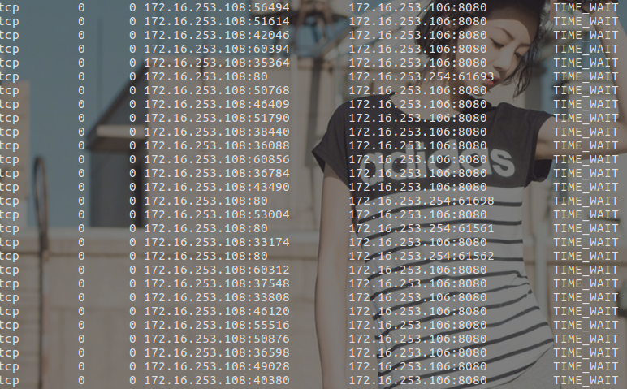
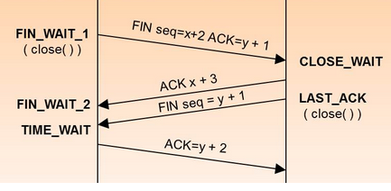

继上次渗透测试之后，在内网发现一个财务系统和一个web应用服务器，对此展开后续渗透测试，在用nmap扫描了两台服务器后出现了连接问题，连接之后就马上断开了，尝试换了端口之后还是不行，网络变卡，于是就去找它的原因。
查找原因
首先就去登录了拿到权限的代理服务器，查看有什么异常，对于服务器的资源倒是没太大消耗，也没有出现卡顿的情况。于是就去查看端口连接情况，发现出现大量TIME_WAIT状态的tcp连接，看了下ip地址都指向了80端口，应该就是这个问题了

产生的原因

TCP在断开连接的时候会发送四次握手，在主动关闭方发送的最后一个ACK后会进入TIME_WAIT状态，保留状态的时间为两个MSL，在两个MSL后依然没有收到回复，就关闭连接。MSL是指Max Segment Lifetime，即数据包在网络中的最大生存时间。每种TCP协议的实现方法均要指定一个合适的MSL值
出现太多TIME_WAIT可能导致的后果
在高并发连接的TCP服务器上，当服务器处理完请求后立刻按照主动正常关闭连接。这个场景下，会出现大量socket处于TIME_WAIT状态，如果客户端的并发量持续很高，此时客户端就会显示连接不上，或者连接不稳定断开。
解决方法
修改 /etc/sysctl.conf1
2
3
4
5
6
7
8
9
10
11# vi /etc/sysctl.conf //加入以下内容，net.ipv4.tcp_syncookies默认就有，不需要再添加
# Controls the use of TCP syncookies
net.ipv4.tcp_syncookies = 1
net.ipv4.tcp_tw_reuse = 1
net.ipv4.tcp_tw_recycle = 1
net.ipv4.tcp_fin_timeout = 30
net.ipv4.tcp_timestamps = 1